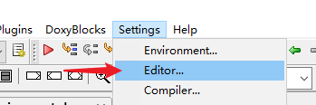
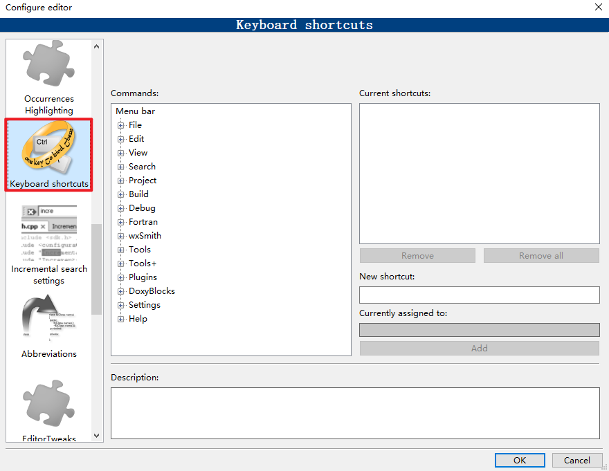
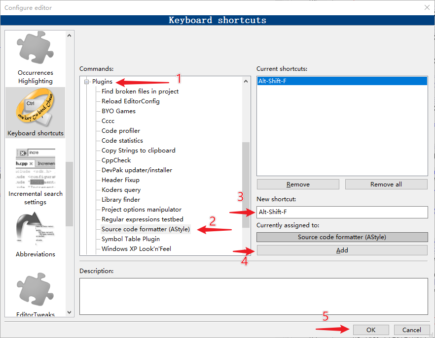

<!DOCTYPE lake>
<h2 data-lake-id="lGrll" id="lGrll"><span data-lake-id="uae43ce80" id="uae43ce80">快捷键设置菜单</span></h2><p data-lake-id="ub0d629af" id="ub0d629af"><span data-lake-id="u1a7c5e68" id="u1a7c5e68">打开</span><code data-lake-id="u5c1cc2da" id="u5c1cc2da"><span data-lake-id="u4147fb67" id="u4147fb67">Settings</span></code><span data-lake-id="u3a3f9f6d" id="u3a3f9f6d"> - </span><code data-lake-id="u95638dcb" id="u95638dcb"><span data-lake-id="u0292d437" id="u0292d437">Editor...</span></code></p><p data-lake-id="ue5a53d14" id="ue5a53d14"></p><p data-lake-id="u352b77f6" id="u352b77f6"><span data-lake-id="uf4e453c9" id="uf4e453c9">左侧选中</span><code data-lake-id="ub8e0372e" id="ub8e0372e"><span data-lake-id="u56320fc6" id="u56320fc6">Keyboard shortcuts</span></code><span data-lake-id="u4a8aca21" id="u4a8aca21">选项卡</span></p><p data-lake-id="u83b5463b" id="u83b5463b"></p><h2 data-lake-id="GJsDs" id="GJsDs"><span data-lake-id="ua4892077" id="ua4892077">设定代码格式化快捷键</span></h2><p data-lake-id="u7afab840" id="u7afab840"><span data-lake-id="u6f9ac934" id="u6f9ac934">下例将代码格式化快捷键设定为</span><code data-lake-id="u8604b352" id="u8604b352"><span data-lake-id="u8fde0879" id="u8fde0879">Alt+Shift+F</span></code></p><p data-lake-id="u98d026fe" id="u98d026fe"><span data-lake-id="u07eb14fe" id="u07eb14fe">首先按照开头的教程，打开快捷键设置菜单，然后按照如下顺序进行设置：</span></p><ol list="uaa9b4469"><li data-lake-id="ubc66ad9d" fid="u43531a57" id="ubc66ad9d"><span data-lake-id="u633d6ddc" id="u633d6ddc">点开Plugins</span></li><li data-lake-id="u8c012276" fid="u43531a57" id="u8c012276"><span data-lake-id="u5c004846" id="u5c004846">点击Source code formatter (AStyle)</span></li><li data-lake-id="u22839646" fid="u43531a57" id="u22839646"><span data-lake-id="ub5cb5f45" id="ub5cb5f45">点击 New shortcut 输入框同时按下：Alt + Shift + F 三个按键</span></li><li data-lake-id="u92c9c7ac" fid="u43531a57" id="u92c9c7ac"><span data-lake-id="u86a3c121" id="u86a3c121">点击Add</span></li><li data-lake-id="u6c77c0e1" fid="u43531a57" id="u6c77c0e1"><span data-lake-id="udd7f2bdc" id="udd7f2bdc">点击Ok</span></li></ol><p data-lake-id="ubef3896d" id="ubef3896d"></p><p data-lake-id="ue3de85ca" id="ue3de85ca"><br/></p><h2 data-lake-id="xQ4Gm" id="xQ4Gm"><span data-lake-id="uf0c58acf" id="uf0c58acf">常用快捷键</span></h2><table class="lake-table" data-lake-id="mFRX5" id="mFRX5" margin="true" style="width: 751px" width-mode="contain"><colgroup><col width="231"/><col width="211"/><col width="309"/></colgroup><tbody><tr data-lake-id="u9b58283b" id="u9b58283b"><td data-lake-id="u9cb828e3" id="u9cb828e3"><p data-lake-id="uefbf6618" id="uefbf6618" style="text-align: center"><strong><span data-lake-id="u4c50f8b7" id="u4c50f8b7">功能</span></strong></p></td><td data-lake-id="udf08163c" id="udf08163c"><p data-lake-id="uafd74ca4" id="uafd74ca4" style="text-align: center"><strong><span data-lake-id="ue96d0571" id="ue96d0571">快捷键</span></strong></p></td><td data-lake-id="u13ed132f" id="u13ed132f"><p data-lake-id="u18cb8017" id="u18cb8017" style="text-align: center"><strong><span data-lake-id="u2dc0ed34" id="u2dc0ed34">备注</span></strong></p></td></tr><tr data-lake-id="ueeccc417" id="ueeccc417"><td data-lake-id="u19bf9e2f" id="u19bf9e2f"><p data-lake-id="ud712f5c8" id="ud712f5c8"><span data-lake-id="u0f7fe055" id="u0f7fe055">注释选中行代码</span></p></td><td data-lake-id="u05658788" id="u05658788"><p data-lake-id="u844f0219" id="u844f0219"><code data-lake-id="u43cfcd93" id="u43cfcd93"><span data-lake-id="u6e540189" id="u6e540189">Ctrl + Shift + C</span></code></p></td><td data-lake-id="uf51dd2a4" id="uf51dd2a4"></td></tr><tr data-lake-id="u6b3e8046" id="u6b3e8046"><td data-lake-id="u67d6b9ce" id="u67d6b9ce"><p data-lake-id="u241cc115" id="u241cc115"><span data-lake-id="ufd2c734f" id="ufd2c734f">取消注释选中行代码</span></p></td><td data-lake-id="ua96556a3" id="ua96556a3"><p data-lake-id="u9033d8d3" id="u9033d8d3"><code data-lake-id="u2db130d5" id="u2db130d5"><span data-lake-id="u36548a0a" id="u36548a0a">Ctrl + Shift + X</span></code></p></td><td data-lake-id="u0170d93e" id="u0170d93e"></td></tr><tr data-lake-id="ub26799e0" id="ub26799e0"><td data-lake-id="u2fa0b05e" id="u2fa0b05e"><p data-lake-id="u55cf4582" id="u55cf4582"><span data-lake-id="ubfd753af" id="ubfd753af">快速打开指定文件</span></p></td><td data-lake-id="u19c487ca" id="u19c487ca"><p data-lake-id="u8c5ea3f6" id="u8c5ea3f6"><code data-lake-id="ue26b9c44" id="ue26b9c44"><span data-lake-id="u08af3f13" id="u08af3f13">Alt + G</span></code></p></td><td data-lake-id="uc60173ff" id="uc60173ff"></td></tr><tr data-lake-id="u141b01ce" id="u141b01ce"><td data-lake-id="ua6e559d7" id="ua6e559d7"><p data-lake-id="ud7e118d7" id="ud7e118d7"><span data-lake-id="u452cdb83" id="u452cdb83">全局搜索指定内容</span></p></td><td data-lake-id="u86175a03" id="u86175a03"><p data-lake-id="u901a2fc4" id="u901a2fc4"><code data-lake-id="u38813005" id="u38813005"><span data-lake-id="ue1546d95" id="ue1546d95">Ctrl + Shift + F</span></code></p></td><td data-lake-id="u7f929e1b" id="u7f929e1b"></td></tr><tr data-lake-id="ue0611139" id="ue0611139"><td data-lake-id="u6605688d" id="u6605688d"><p data-lake-id="u5faffd8a" id="u5faffd8a"><span data-lake-id="u7dc48c77" id="u7dc48c77">代码提示</span></p></td><td data-lake-id="u6497e9bf" id="u6497e9bf"><p data-lake-id="u3a820ccb" id="u3a820ccb"><code data-lake-id="u742eca5b" id="u742eca5b"><span data-lake-id="u65bdfd95" id="u65bdfd95">Shift + Space</span></code></p></td><td data-lake-id="u0d912267" id="u0d912267"></td></tr><tr data-lake-id="u5a56bd2a" id="u5a56bd2a"><td data-lake-id="u43f6df30" id="u43f6df30"><p data-lake-id="uefb01dc3" id="uefb01dc3"><span data-lake-id="uc12e4e9e" id="uc12e4e9e">函数参数提示</span></p></td><td data-lake-id="u7e9ba3ec" id="u7e9ba3ec"><p data-lake-id="u48674536" id="u48674536"><code data-lake-id="u8f1da715" id="u8f1da715"><span data-lake-id="u8ddde540" id="u8ddde540">Shift + Alt + Space</span></code></p></td><td data-lake-id="u37e2d3fa" id="u37e2d3fa"><p data-lake-id="ue278a8eb" id="ue278a8eb"><span data-lake-id="u6172ccd8" id="u6172ccd8">函数名写完之后，在括号里使用此快捷键</span></p></td></tr><tr data-lake-id="u1f11bec2" id="u1f11bec2"><td data-lake-id="ub2dec09f" id="ub2dec09f"><p data-lake-id="uef99f959" id="uef99f959"><span data-lake-id="ue4cfc124" id="ue4cfc124">编译代码</span></p></td><td data-lake-id="uc37cfa11" id="uc37cfa11"><p data-lake-id="u16260816" id="u16260816"><code data-lake-id="ud61d3f6c" id="ud61d3f6c"><span data-lake-id="uab24fb41" id="uab24fb41">Ctrl + F9</span></code></p></td><td data-lake-id="uff0a865e" id="uff0a865e"></td></tr><tr data-lake-id="u5c08c008" id="u5c08c008"><td data-lake-id="u875761cc" id="u875761cc"><p data-lake-id="u4c6c5897" id="u4c6c5897"><span data-lake-id="uc82fd7db" id="uc82fd7db">​</span><br/></p></td><td data-lake-id="ub4fb0262" id="ub4fb0262"><p data-lake-id="u0d8bac65" id="u0d8bac65"><br/></p></td><td data-lake-id="u47f4defe" id="u47f4defe"></td></tr></tbody></table>